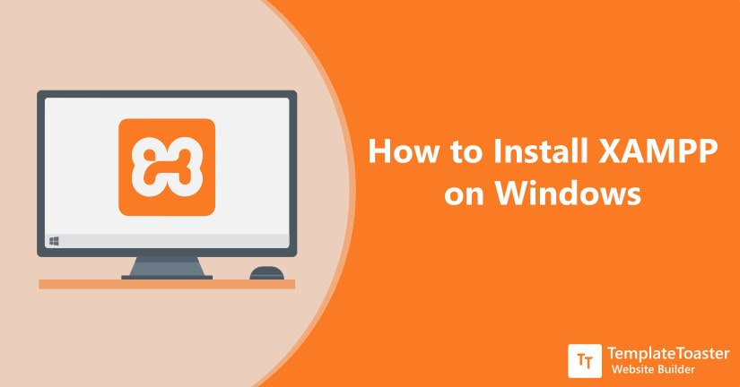
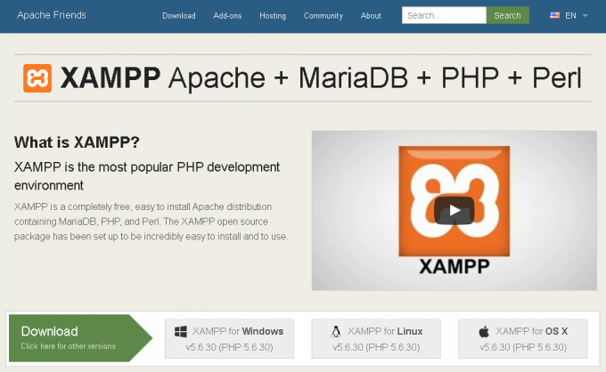
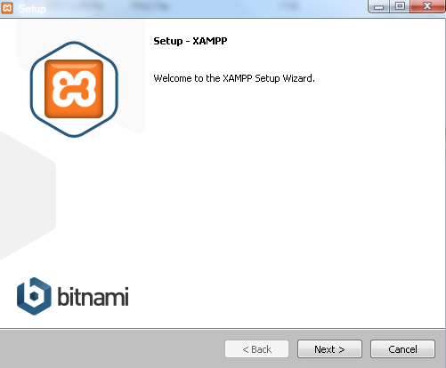
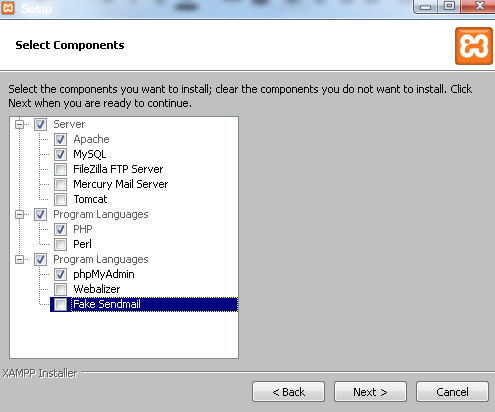
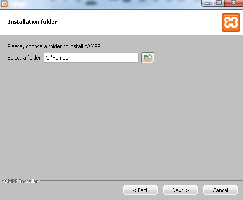
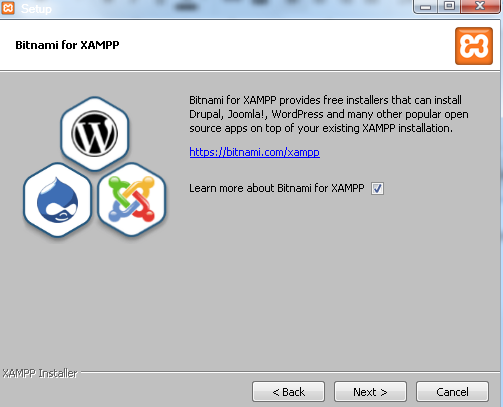
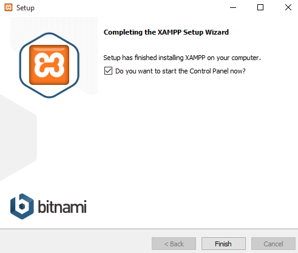
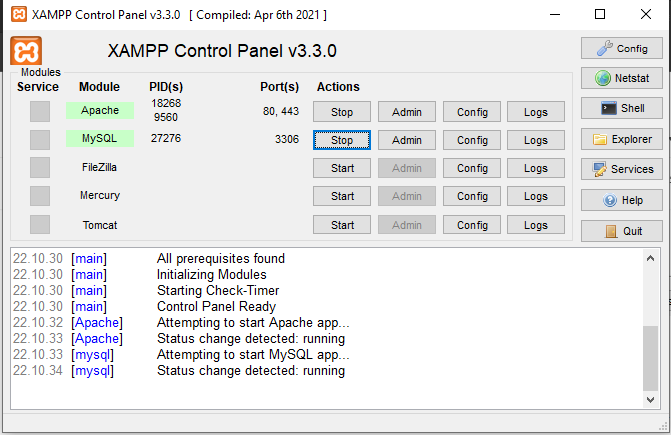

cara Menginstall XAMPP di Windows

XAMPP merupakan aplikasi cross platform: Apache, MySQL, PHP dan Perl. XAMPP juga memberikan solusi sederhana dan cukup ringan dijalankan, memungkinkan Anda membuat web server lokal untuk melakukan pengetesan website.
XAMPP dapat dijalankan pada Mac dan Linux. Dalam tutorial ini saya akan membahas pada Windows.
Apa saja yang dibutuhkan ?
Untuk memulai langkah-langkah pada tutorial ini, Anda memerlukan :
- Komputer dengan sistem operasi Windwos
- File installer XAMPP
Berikut adalah cara install XAMPP
1. Unduh XAMPP
Download XAMPP melalui website Apache Friends berikut ini.

2. Install XAMPP
Lakukan instalasi setelah selesai mengunduh file installer. Selama proses instalasi mungkin kalian akan melihat pesan yang menanyakan apakah anda yakin akan menginstalnya. Silakan tekan Yes untuk melanjutkan proses instalasi.
- klik tombol Next
- Pada tampilan selanjutnya akan muncul pilihan mengenai komponen mana dari XAMPP yang ingin dan tidak ingin Anda instal. Beberapa pilihan seperti Apache dan PHP adalah bagian penting untuk menjalankan website dan akan otomatis diinstal. Silakan centang MySQL dan phpMyAdmin, untuk pilihan lainnya biarkan saja.
- Pilih folder dimana XAMPP akan kalian install
- Pada halaman selanjutnya, akan ada pilihan apakah Anda ingin menginstal Bitnami untuk XAMPP, dimana nantinya dapat Anda gunakan untuk install WordPress, Drupal, dan Joomla seccara otomatis.
- Tunggu hingga proses instalasi selesai
- Setelah berhasil instal, klik Finish





3. Jalankan XAMPP
Setelah proses instalasi selesai, bbuka xampp kemudian klik tombol start pada Apache dan MySQL.

untuk pengecekan, silahkan jalankan perintah http://localhost/dashboard/ pada browser kalian
dan perintah http://localhost/phpmyadmin.
Kesimpulan
Saat ini kalian sudah belajar bagaimana cara instal XAMPP. Selanjutnya Anda dapat menjalankan aplikasi berbasis web pada localhost, seperti menginstal WordPress.